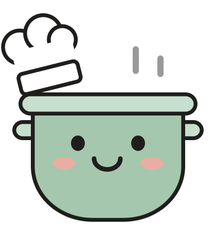

{{ srcName }}
🍜WG-KücheDiese Woche
{{ title }}
{{ creatorL }}{{ creator }}
{{ caption }}
mehr
Original öffnen{{ srcSub }}
Gekocht
Link teilen
Kopieren
Rezept hinzufügen
Rezept finden
Rezept hinzufügen
Rezept wird gesucht
Das dauert meist ein paar Sekunden, manchmal auch eine halbe Minute.
{{ noteT }}
{{ noteSub }}
Noch mal suchen
Rezept hinzufügen
Rezept
Noch nicht gesendet
Bearbeiten
Zutaten{{ ingCount }}
{{ i.t }}
Schritte{{ stCount }}
{{ s.n }}{{ s.t }}
Verlauf
{{ h.a }}{{ h.t }}{{ h.d }}
Verschieben nach…
Archivieren
{{ title }}
Abbrechen
Rezept
Speichern
{{ sec.name }}{{ sec.count }}
{{ r.helperT }}{{ r.counter }}
Nach oben
Nach unten
{{ sec.addT }}

{{ sec.fullT }}{{ k.l }}
{{ toastT }}
{{ toastA }}
Änderungen verwerfen?
Dein Rezept bleibt dann so, wie es vorher war.
Weiter bearbeiten
Verwerfen
9:41